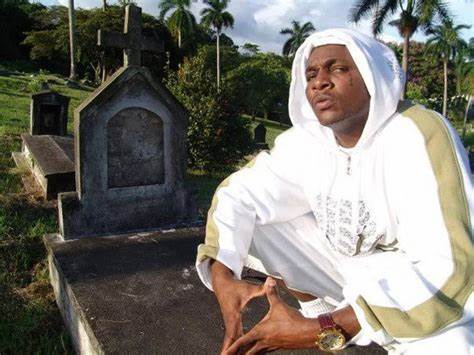

En esta web descubriremos el recorrido del artista, sus canciones, albumes y trayectoria profesional.
Alonso David Blackwood Drakes, conocido artísticamente como Danger Man, fue un cantante panameño de reggae nacido el 8 de diciembre de 1972 en la provincia de Colón, Panamá. Reconocido como "El Rey del Ghetto", destacó como uno de los exponentes más influyentes del género reggae en Panamá durante las décadas de 1990 y 2000.
Su carrera musical comenzó a ganar relevancia con el lanzamiento de su primer álbum, Gangsta, en 1996, consolidándose como una figura prominente en la escena musical del reggae en su país.
Esperamos Disfrute de la lectura